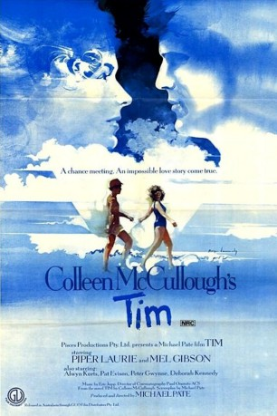

#7628 Tim - Kann das Liebe sein?
 
 IMDB-Wertung: 6.5 / 10
IMDB-Wertung: 6.5 / 10  Metascore: 0
Metascore: 0 
Tim ist 24 und nicht gerade der hellste Kopf. Als Gelegenheitsarbeiter lernt er die viel ältere Geschäftsfrau Mary kennen, die ihm anfänglich aus mütterlichen Gefühlen Hilfe und Unterstützung bietet. Doch dann kommt die Liebe in's Spiel und alles wird kompliziert.
Jahr: 1979
Dauer: 108 Minuten
FSK: 6
Land: Australien Studio: Edel Media & EntertainmentTonspuren:
Untertitel: Deutsch,
Auflösung: 1080p (1920x1040) Größe: 6993 MB
Genre: Drama, Liebe
Regisseur: Michael Pate
Drehbuch: Chris Buck
Soundtrack:
Darsteller:
 Piper Laurie als Mary Horton
Piper Laurie als Mary Horton Mel Gibson als Tim Melville
Mel Gibson als Tim Melville- Deborah Kennedy als Dawnie Melville
- Ray Barrett als Man Outside Hotel , uncredited
- Alwyn Kurts als Ron Melville
- Pat Evison als Em Melville
- Peter Gwynne als Tom Ainsley
- David Foster als Mick Harrington
- Michael Caulfield als John Martinson
- Margo Lee als Mrs. Harrington
- James Condon als Mr. Harrington
- Brenda Senders als Mrs. Parker
- Kevin Leslie als Curly
- Allan Penney als Mr. Thompson
- Brian Barrie als Dr. Perkins
- Geoff Usher als Minister
- Bill Charlton als Builder
- Sheila McGuire Taylor als Celebrant
- Doris Goddard als Maud
- Catherine Bray als Mrs Martinson
- Arthur Faynes als Ambulance Attendant
- Louise Pago als Secretary , uncredited
Datei: X:\1979\Tim - Kann das Liebe sein (1979, FSK6, 1920x1040).mkv seit 29.11.2017
Festplatte: HD 1971-1979
 Es gibt insgesamt 29 Filme in der Gruppe '1979'
Es gibt insgesamt 29 Filme in der Gruppe '1979'